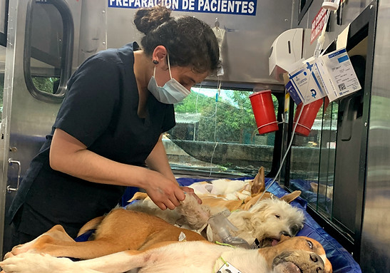
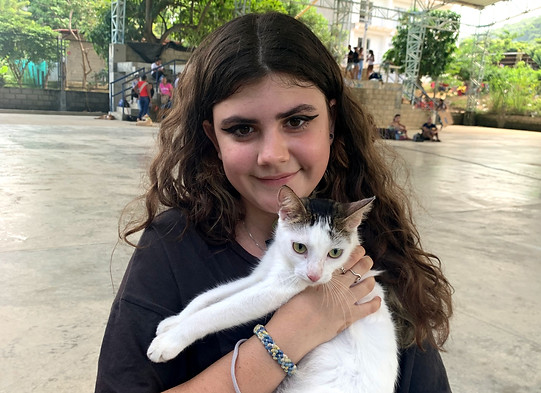

Disponible
Sistema de diseño
Arca Luminosa
Guía visual y de componentes del sitio. Cálido, editorial y confiable — inspirado en la luz que la fundación le devuelve a los animales de calle. Todo lo que aparece acá se usa tal cual en las 13 páginas del sitio.
Fundamentos
Colores
Primitivo → semántico. Verde tomado del logo original; negro cálido en vez de negro puro; crema en vez de blanco puro para una sensación más editorial.
Verde — marca
green-900#1F3306
green-700#436B12
green-500#77B62A — primary
green-300#B8E07E
green-100#EFF8DE — tint
Ink & cream — texto y fondo
ink-900#12140F — texto
ink-500#5B5F51 — muted
ink-100#E4E7DA — bordes
cream-100#FBF9F2 — bg
cream-0#FFFFFF — surface
Acentos
red-500#D7452E — donar/urgente
sun-500#F2A93C — destacado
sky-500#3E8FB0 — informativo
Fundamentos
Tipografía
Display: Fraunces (serif cálida, con cursiva para acentos emocionales) · Cuerpo: Plus Jakarta Sans (sans amigable, alta legibilidad).
display / h1
Iluminando vidas
display / h2
¿Qué hacemos?
display / h3
Esterilizamos con amor
italic accent
"No estoy perdido, busco un hogar"
body / lede
Desde 2017 visibilizamos, rescatamos y esterilizamos a los perros y gatos que viven en las calles de Colombia.
body
Texto de párrafo estándar para contenido general del sitio.
small
Texto secundario, meta información, ayudas de formulario.
eyebrow
Etiqueta de sección
Fundamentos
Espaciado & radios
Escala de espaciado (base 8px)
sp-2
sp-4
sp-6
sp-8
sp-10
Radios
sm 8px · md 16px · lg 28px · xl 40px · pill 999px
Fundamentos
Iconografía
Set propio, trazo 1.8px, viewBox 24×24, color currentColor. Se insertan inline (no como sprite externo) para evitar problemas de CORS al abrir el sitio como archivo local. Definiciones de referencia en assets/icons/sprite.svg.
Fundamentos
Movimiento (GSAP)
Todo el movimiento vive en js/main.js vía atributos data-*, sin JS a medida por página.
data-reveal
Fade + translateY al entrar en viewport.
data-reveal-group
Stagger de hijos directos (.12s).
data-counter="2800"
Contador animado al entrar en viewport (2s, power2.out).
data-hero-in
Timeline de entrada del hero, stagger .12s + delay .15s.
data-magnetic
El botón sigue levemente al cursor (elastic al salir).
data-stagger-grid
Stagger para grids de cards (.1s, power3.out).
Respeta prefers-reduced-motion: las duraciones colapsan a 0s y los elementos se muestran directamente.
Componentes
Botones
| Clase | Uso |
|---|---|
.btn.btn--primary | Acción principal (Adoptar, Enviar formulario) |
.btn.btn--donate | Donar — único caso de uso del rojo como color de acción |
.btn.btn--dark | Acción secundaria fuerte sobre fondos claros |
.btn.btn--ghost / .btn--ghost-light | Acción terciaria, sobre fondo claro / sobre fondo oscuro |
.btn--sm / .btn--block | Modificadores de tamaño y ancho completo |
Componentes
Badges
Disponible
Urgente
Cachorro
Esterilizado
Nuevo
Componentes
Cards

Blog
card-post — usada en blog.html

card-product
$00.000 — usada en tienda.html.card-flat
Contenedor genérico con sombra suave — usado en formularios y bloques de contenido.
.card-flat--tint
Variante con fondo verde tenue, sin sombra — usada para callouts informativos.
Componentes
Formularios
Componentes
Acordeón & progreso
Contenido de ejemplo del panel — usado en guia-adopcion.html y preguntas frecuentes.
Segundo ítem de ejemplo, cerrado por defecto.
.progress — barra de meta de donación
Componentes
Timeline, stats & quotes
2017
Ítem de timeline de ejemplo.
Hoy
Segundo ítem de ejemplo.
2.800+Collares
1.459Esterilizaciones
"Cada collar es una promesa: no estoy perdido, busco un hogar."